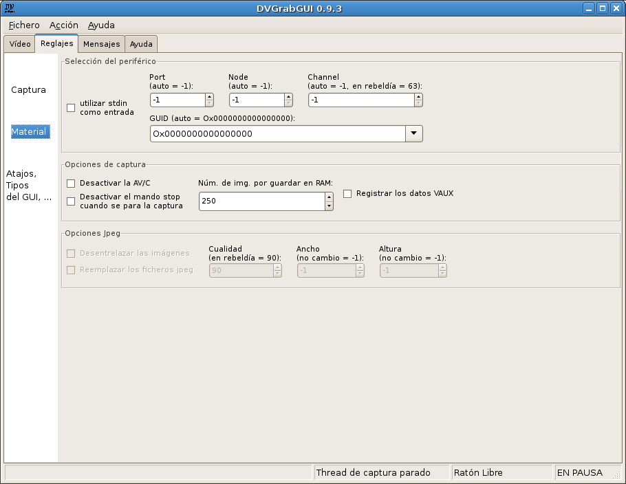

Pre: Referencias → Reglajes → Captura --- ↑Home --- Sig: Referencias → Reglajes → GUI
DVGrabGUI 0.9.4
Referencias → Reglajes → Material
Este uñero le permite ajustar más adelantadas opciones, mayormente materiales.

-
Selección del periférico:
Este grupo reúne los reglajes de las fuentes materiales dv. No debería
modificar esos reglajes, a menos que tenga más de una fuente dv.
-
utilizar stdin como entrada
Si activado, DVGrabGUI intentará capturar un flujo dv desde la
entrada estándar. ¡Funcionalidad no sometida a prueba!
Fíjese en que cuando está activada, los cuatro otros reglajes no son
disponibles.
-
Port
Ajustar el "port" firewire utilizado para buscar periféricos dv.
Debería dejarlo a "-1" para que DVGrabGUI lo seleccione
automáticamente.
-
Node
Ajustar el "node" firewire utilizado por el periférico dv.
Debería dejarlo a "-1" para que DVGrabGUI lo seleccione
automáticamente.
-
Channel
Ajustar el "channel" firewire sobre el cual la conexión dv será
establecida. En rebeldía, es el "63". Debería dejarlo a "-1" para
que DVGrabGUI lo seleccione automáticamente.
-
GUID
Ajustar el GUID (identificador del periférico) del periférico
firewire de utilizar como fuente dv. Si a "0"
("Ox0000000000000000"), DVGrabGUI intentará detectar
automáticamente una fuente dv. Puede también seleccionar uno de
los periféricos detectados – DVGrabGUI intenta darle
los nombres de esos periféricos… sin ninguna garantía! O puede
entrar un valor hexadecimal de GUID (de tipo
"Ox00af56980000ce76" – ¡otro-formateados
valores resultarán en el valor en rebeldía "0"!).
-
Opciones de captura:
Este grupo reúne varios reglajes internos.
-
Desactivar la AV/C
No utilizar las posibilidades de controlar la cámara desde el PC
(no muy útil de momento).
-
Desactivar el mando stop cuando se para la captura
No mandar stop durante la parada de la grabación dv. Sólo útil
al grabar desde casetes…
-
Núm. de img. por guardar en RAM
El número de imágenes dv por guardar en memoria (1 imagen = 144Ko).
-
Registrar los datos VAUX
Registrar los datos "Video AUXiliary" de las imágenes dv dentro
de un fichero HTML (cosa de "geek" – cuidado, ¡muy
largos ficheros muy rápidamente!).
-
Opciones Jpeg:
Este grupo reúne los reglajes de grabación Jpeg, sólo disponible cuando
ha elegido el formato "Jpeg".
-
Desentrelazar las imágenes
Si activado, las imágenes serán toscamente desentrelazadas antes
de ser registradas como ficheros Jpeg.
-
Reemplazar los ficheros jpeg
Si activado, DVGrabGUI borrará las imágenes jpeg registradas
anteriormente; sino, las añadirá (utilizando mayores números
por los nombres de fichero…).
-
Cualidad
¡La cualidad de la compactación Jpeg!
-
Ancho
Lo ancho de las imágenes registradas: DVGrabGUI pondrá a la
escala las imágenes dv si lo necesitan (si "Ancho" y siguiente
"Altura" no dan el correcto aspecto, ¡es "ancho" el que será
modificado!).
-
Altura
La altura de las imágenes registradas: DVGrabGUI pondrá a la
escala las imágenes dv si lo necesitan ("Altura" nunca es
modificada, vea más arriba).
Pre: Referencias → Reglajes → Captura --- ↑Home --- Sig: Referencias → Reglajes → GUI
(c) 2006, 2007, 2008 Bastien Montagne (montagne29 en wanadoo punto fr).
Proyecto albergado en sourceforge.net/projects/dvgrabgui.